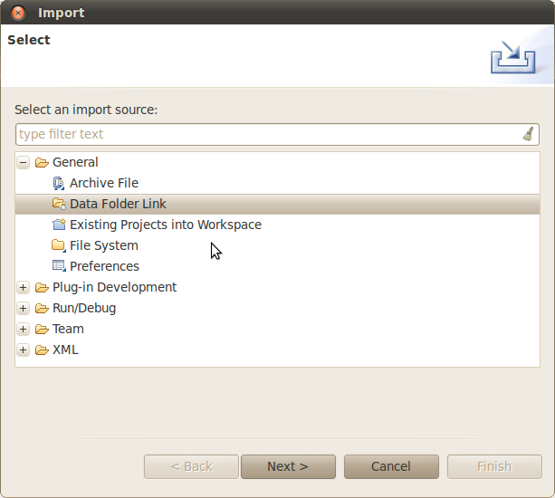
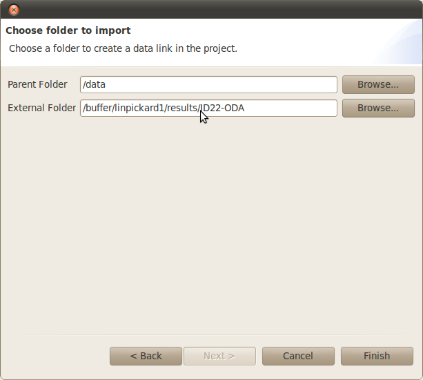

To import your first remote data folder follow the following instructions:
Right click on the 'data' project.
Choose 'Import...' you will see this dialog:

Expand 'General' and choose 'Data Folder Link'
Hit 'Next' then choose the folder to import.

Click 'Finish', the folder will be created with links in the 'data' project.
If you import many file, the entire contents will be recursively checked to make the links but files will not be copied. This process may take some time but may be cancelled if it takes too long.